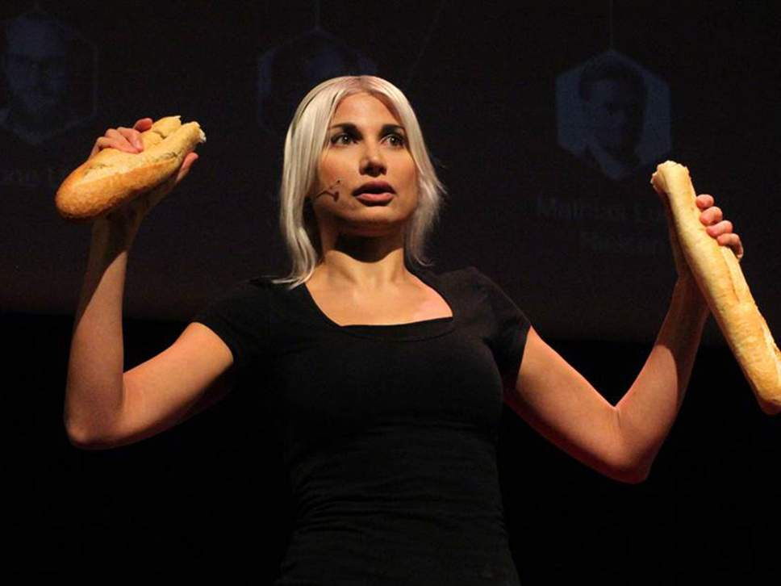

by SELINA JUULAUG 21th, 2018

The beginning : Selina Juul was born on March 7th 1980 in Moscow, Russia and moved to Denmark when she was 13 years old. She has a BA in Graphic Design from Denmark's School of Media and Journalism (former
Graphic Arts Institute of Denmark). Selina has owned and operated her own business as an independent Illustrator and Graphic Designer since 2002.
The Stop Wasting Food movement
Environmental sustainability
and global responsibility have always been matters close to her heart, so in 2008 Selina Juul founded the Stop Wasting Food movement Denmark (Stop Spild Af Mad). At the
present, Selina weekly puts about 40 hours of voluntary work into the movement, but the fight to minimize food waste is spreading, and new exciting challenges arise all the time.
Stop Wasting Food is Denmark's largest non-profit
consumer movement against food waste. Set up by consumers for consumers, Stop Wasting Food is an NGO that has constructively shaped public opinion in its drive to prevent food waste. It seeks to increase public awareness of the
throwaway society by organizing campaigns, mobilizing the press and media, and encouraging discussion, debate and events of all kinds, all with the aim of decreasing the current mountains of food waste. Stop Wasting Food is empowering
the consumers to take action and urges them to launch individual initiatives such as reducing their own food waste, cooking leftovers, shopping more wisely and distributing surplus food to shelters for the homeless. See more
results and achievements of Stop Wasting Food is Denmark's work here. Strong support by leading politicians and food personalities
Several
thousands of Danish consumers, politicians, MP's and MEP's as well as leading Danish food personalities support Stop Wasting Food movement - as well as Denmark's former Prime Minister Mr. Poul Nyrup Rasmussen. UN, EU and the Government
Stop
Wasting Food is mentioned in the Food and Agriculture Organization of the United Nations (FAO)'s international report on food waste "Global Food Losses and Food Waste",
is a co-developer of the Joint Declaration Against Food Waste, which inspired the EU resolution against food waste and
is among the signatories to the Danish Minister for the Environment's Charter Against Food Waste. Stop Wasting
Food is appointed a seat in the Initiative Group Against Food Waste under the Danish Minister for the Environment. Food waste on the agenda
Stop Wasting Food continues to put food waste on the agenda.
The organisation has established itself as Denmark's leading expert on food waste and has appeared in numerous articles, radio and TV shows: 18.000+ articles in newspapers and magazines, as well as more than 100+ radio and 157 TV appearances.
Among them BBC News and German TV channel ARTE. In the short time the movement has existed, the discourse regarding food waste in Denmark has changed from a rather uninformed
indifference to one of heightened awareness. Among the many results, Stop Wasting Food inspired the retail chain Rema 1000 to drop quantity discounts in the chain's more than 200 Danish stores and
introduced doggybags in Danish restaurants in collaboration with Unilever Food Solutions. The book
Selina Juul published an international award-winning Leftovers Cookbook 'Stop spild af mad - en kogebog med mere' with
recipes from top celebrity chefs. The Leftovers Cookbook 'Stop spild af mad - en kogebog med mere' is a national Danish winner of Gourmand World Cookbook Awards 2011 in the category of Best Sustainable Food Book and
Recipient of shared second place in Gourmand in Gourmand World Cookbook Awards 2012 in the category of Best Sustainable Food Book in the World. Dane have reduced food waste
All
the hard work is paying off: TNS Gallup survey for Stop Wasting food movement and Danish Agriculture & Food Council,
2013, shows that within the last year, every 2nd Dane has reduced his/hers food waste. Declarations against food waste
Stop Wasting Food is one of the co-developers of the Joint Declaration Against Food Waste -
an international document which is handed over to the European Parliament and the United Nations. The document lists proposals for sustainable food production and consumption, and encourages the world leaders to a commitment
to a global reduction of food waste by at least 50% by 2025. It also proposes that a global reduction of food waste should be elevated to a UN Millennium Development Goal. Stop Wasting Food is extremely pleased to see, that
the European Parliament has implemented numerous suggestions from the Joint Declaration Against Food Waste in the EU resolution against food waste. Stop
Wasting Food is a co-signer of the following declarations against food waste:Joint Declaration Against Food Waste
Danish
Minister for the Environment's Charter Against Food Waste
FAO's SAVE FOOD Declaration
FoodDrinkEurope's
Food Wastage Declaration "Every Crumb Counts" International partnerships and collaborations
Stop Wasting Food movement Denmark is also a Partner of FAO initiative SAVE FOOD,
Partner of EU project FUSIONS and Partner of FAO/UNEP campaign Think.Eat.Save, where
the UN Secretary-General Ban Ki-moon took
part in a Danish press effort due to the launch of Think.Eat.Save Nordic-Baltic Ad Competition. Partner of European Alliance against Food Waste - FUSIONSStop Wasting Food movement Denmark participates
in a 4 year long European collaboration against food waste, FUSIONS. Among the 21 Partners involved in FUSIONS are Partners from 13 European countries: universities,
institutions, NGOs, companies and Food and Agriculture Organization of the United Nations FAO. The collaboration is the first joint and transnational action against food waste in these gigantic dimensions. The
aim of FUSIONS is to create a European platform of governmental and non-governmental organizations and companies from the food chain, i.e. industry, retailers and consumer organizations. The platform aims at providing simplified
data that can identify and evaluate new initiatives to reduce food waste. Furthermore, the results will be disseminated to the public, and the development of technical and policy recommendations to the entire value chain
and the EU. The platform will then activate, engage and support the main stakeholders in the European food value chain in order to deliver a reduction of 50% of food waste by 2020. Earlier, Stop Wasting Food movement
Denmark signed Joint Declaration Against Food Waste along with several European organizations;
The Joint Declaration Against Food Waste encourages the world leaders to a commitment to a global reduction of food waste by at least 50% before 2025. The Declaration served as inspiration for the European Parliament's
EU resolution against food waste - and the FUSIONS collaboration is now putting words into action.